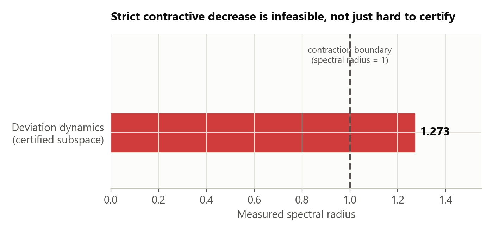
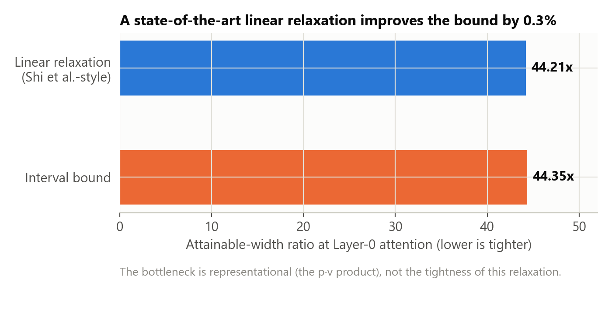
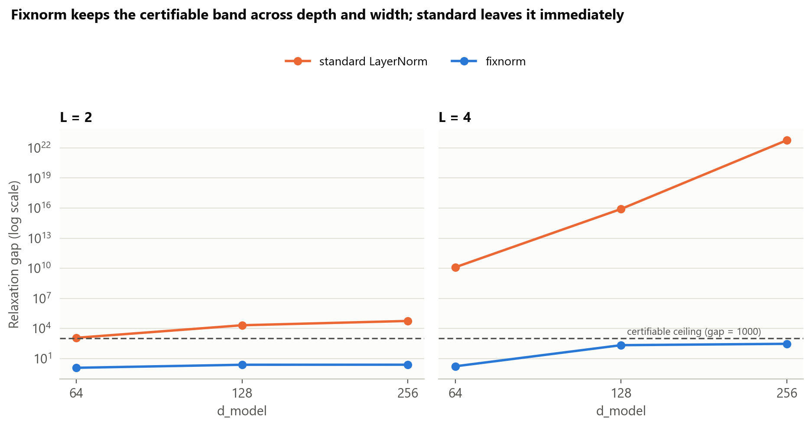
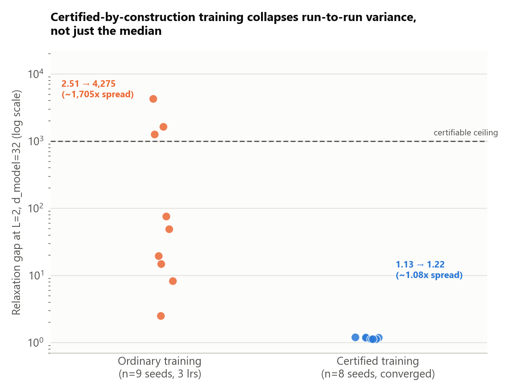
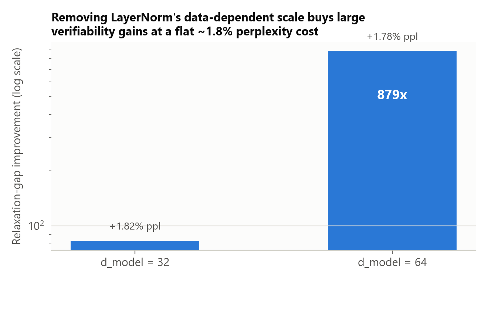
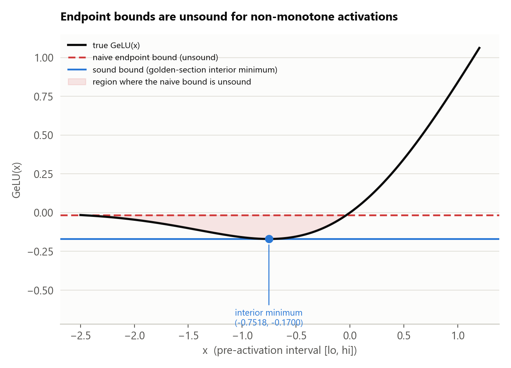

A strict Lyapunov decrease certificate is infeasible for this model — measured spectral radius 1.273 against a threshold of 1 — so the obligation is restated as bounded finite-horizon growth: proved by sound branch-and-bound, never sampled. This page reports what that restatement buys, where it stops scaling, and one comparison this project's own compute environment could not finish.
Independent research · formal verification of a toy transformer · 2026
This paper reports three narrow, measured results on small transformers and states plainly what they
do and do not support. All three are scoped to two toy systems: a 2-layer, d_model=32,
26,144-parameter transformer trained on a synthetic feature-routing task, and a family
of up to 4-layer, d_model up to 256, at most 300,000-parameter character-language models
trained on TinyShakespeare. Neither has been shown to hold at production scale. On the routing-task
model, a strict contraction certificate for the residual-stream deviation dynamics is infeasible: the
measured spectral radius on the certified subspace is 1.273, above the threshold of 1
required for any positive-definite Lyapunov function to exist. Depth compounds the same difficulty on
the character-language models in a way that does not follow a smooth power law. Putting a sound
interval-bound term into the training loss collapses the run-to-run spread of the certified gap from
1705× to 1.08× at the one grid cell where it converges — 18 of 18 other
cells diverged, and a further 9 of 9 runs diverged under three deliberately gentler schedules run
specifically to test whether that limit would move. No claim in this paper has been demonstrated to
transfer to a production model, and none of the results is offered as a general law of transformer
architectures.
What this is. A sound, from-scratch hybrid-zonotope branch-and-bound certifier for a
26k-parameter, 2-layer transformer, plus a scaling study on up to 300k-parameter character-language
models. Every number is read from a results/*.json file by a generator script; nothing in
either paper is hand-typed.
What this is not. A production-scale result, a general theorem about transformer architectures, or a claim that any of the four safety-relevant findings below transfer past the two toy systems they were measured on.
What's reported as failing, not hidden. An independent auto_LiRPA/CROWN baseline
attempted four times and never completed in this compute environment (documented, not fabricated — see
Results). A schedule search run specifically to make certified training converge past
d_model=32, which did not succeed (9 of 9 runs diverged). Both are written into the papers
as negative results, not omitted.
Treat the residual stream as a discrete-time nonlinear dynamical system with the layer index as time, work in deviation coordinates \(e_l = x_l - x^*_l\) around a nominal trajectory, and formalize alignment safety as an invariant sublevel set of a positive-definite \(V\) whose behaviour along layers is proved rather than sampled:
Threat model. Activation steering along 4 SAE decoder directions at the final token, \(e = \sum_j \alpha_j U_j\), \(|\alpha_j| \le \rho\). Safety property. The unsafe-logit margin \(s(x) = \max_{v\in\text{unsafe}} \text{logit}_v - \max_{v\in\text{safe}} \text{logit}_v\) stays negative. Bridging this to any real notion of harmful behaviour is a semantic assumption, stated as one, not a proved step.
Two of the original design assumptions did not, and both are load-bearing rather than embarrassing — the paper's actual contribution is what replaces them.
1. Strict decrease is infeasible, not just hard. A positive-definite \(V\) with \(V(e') \le \gamma V(e)\), \(\gamma < 1\), exists iff the deviation dynamics has spectral radius below 1 — standard Lyapunov theory, not a new claim. Measured on the certified subspace it is 1.273. No relaxation tightening or training schedule can produce that certificate, so the obligation is restated as bounded finite-horizon growth: certify the smallest provable \(\gamma_l\) per layer and compose. Still by construction, still sampling-free.
2. Small-gain composition cannot certify a residual stream. The exact identity path forces \(\gamma_{\text{layer}} \ge 1\) unconditionally; the measured cascade product is 5562.9. Contraction would have to come from sign-aware cancellation, which a norm gain discards by construction. The compositional payoff here is O(L) independent discharge, not gain multiplication.

By sound hybrid-zonotope branch-and-bound at 2048 boxes, the certified radius reaches \(\rho = 0.04\). Independent falsification across 3209 discharged boxes (2048 samples plus 30-step PGD each) finds no violation of any box's own bound and exact coverage of the threat set. z3 over exact rationals confirms the margin readout 8/8 sound, 7/8 tight — and it is the tightness query, not a soundness-only test, that caught a real bug: a sound-but-loose readout inflating the bound by ~11.7 logits.
discharged boxes replayed with sampling + PGD; exact coverage of the threat set, zero violations
margin readout sound / tight; caught an ~11.7-logit readout bug a soundness-only test would have missed
amplification through two blocks for any decorrelating abstraction — motivates the structure-preserving prover
fitted width-scaling exponent on random init — the wall is delayed, not removed, and still super-linear


Two from-scratch reference engines (interval-bound, mean-value-form) are vacuous on this model — any decorrelating abstraction amplifies 4.7×108 through two blocks, so the final LayerNorm's structural clamp is all that keeps the bound finite. A CROWN-style engine built specifically to keep the 4-dimensional steering structure exact still loses, and the loss is localized: it tracks the prover to 1.61× at layer-0 LayerNorm and diverges to 39.5× (prover: 3.86×) at layer-0 attention, because softmax uncertainty enters as interval coefficients.
The auto_LiRPA baseline — reported as an attempt, not a result. An independent
comparison against auto_LiRPA's CROWN implementation, on this exact trained model and threat model, was
attempted four separate times. auto_LiRPA itself is verified working in this environment — a standalone
two-layer MLP returns a CROWN bound in under a second, and this project's own tail model wrapped in
BoundedModule returns a real bound in isolation. The full comparison (retrain, then wrap)
never completed across four attempts, at system loads ranging from 47% to 100% to a normal 45% — a
spread that rules out simple resource contention as the sole explanation, and the actual cause was not
further diagnosed. Both halves of the comparison are independently verified working; the code that runs
it is audit/c31_autolirpa_baseline.py; this project's local compute environment did not
produce a completed run. That is the honest status, reported in Section III-C of the IEEE paper rather
than left out.
Putting a sound interval-bound term into the training loss collapses the run-to-run spread of the certified gap from 1705× to 1.08× at \(L=2\), \(d_{\text{model}}=32\), fixnorm, with zero unstable ReLUs on every converged run, at a perplexity cost of 13.3–28.0%. This is reported for exactly the one cell where it holds: 18 of 18 other (depth, width, arm) combinations diverged at every learning rate under the schedule used throughout.
Three deliberately gentler epsilon-ramp schedules were then run specifically to test whether that limit was an artifact of one schedule choice — a smaller target radius, a much slower ramp, and both combined, three seeds each at \(L=2\), \(d_{\text{model}}=64\). All 9 runs diverged. This rules out the two most obvious fixes without ruling out every possible schedule in a space too large to search exhaustively here. The question was tested directly rather than left open, and the answer at this compute budget is still divergence.


d_model 32 to 64 for a flat ~1.8% perplexity cost.A gradient-based search against the differentiable training-signal engine (interval arithmetic, not the certifying prover) finds real, repeatable out-of-distribution sensitivity: a 16.9× relaxation-gap increase on repeated-token contexts, reproduced in 5 of 5 restarts. Checked black-box against the actual certifying zonotope prover — never part of the gradient search — the same adversarial context shifts the sound bound by only 1.05×, both points remaining far inside the certified band with exact containment (worst violation 8.9e-15, float noise). One context pair, not a swept claim in either direction — but the direction is the interesting one: the correlation-preserving engine did not inherit the differentiable engine's blind spot on this search.

The Anaconda build this was developed against ships a duplicate libiomp5md.dll;
src/__init__.py pins KMP_DUPLICATE_LIB_OK before torch is imported, so import
src first. Every number in the papers is regenerated from results/*.json by
these scripts, never hand-typed.
pip install -r requirements.txt python tests/smoke.py # fast sanity + soundness python tests/test_alignment.py # the invariant that bit us python stages/a0_bootstrap.py # full pipeline (~15 min, CPU) python src/report.py # regenerate ARCHITECTURE.md python audit/report_manuscript.py # regenerate MANUSCRIPT.md from results/ python audit/verify_bundle.py # gate: every artifact present, synced, hashed
See the repository
for the full README, soundness discipline, and the 30-script audit trail. LaTeX sources for both papers
(nmi_paper.tex, ieee_paper.tex) are included and regenerate with
pdflatex against the real Springer Nature and IEEE templates.
@article{singh2026certified,
title = {Certified Safety Margins for a Transformer Residual Stream},
author = {Singh, Sehaj},
year = {2026},
note = {Sound hybrid-zonotope branch-and-bound certification of a toy
transformer's residual stream; scaling and certified-training
study on character-language models},
url = {https://github.com/sehajr-singhs/transformer-residual-stream-verification}
}